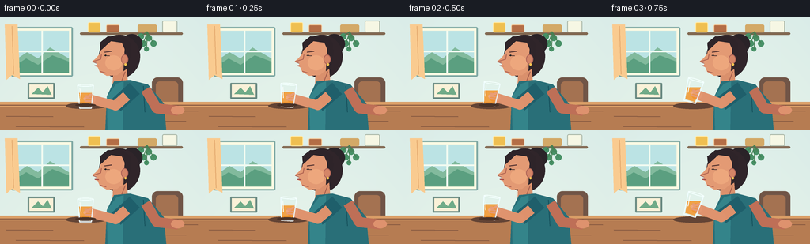
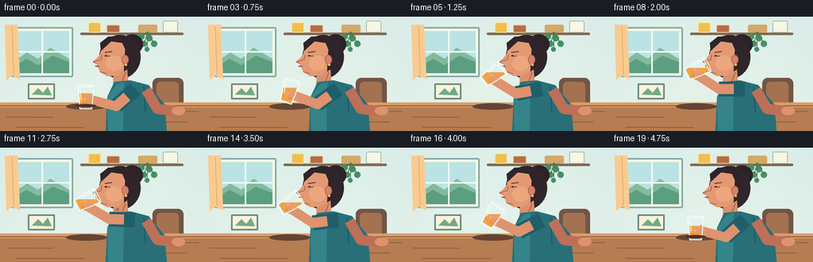
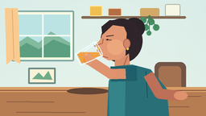

CODING AGENTS AS PIXEL WORLD MODELS
traex/GPT-5.6-Sol · motion_rationality_0029
点击播放 · 原生 RGB 像素
逐轮保存的候选
回放视频、检查图与代码变化。
每份候选均可单独播放。实际图片检查记录在下方工具轨迹中。
候选 01播放与检查图
点击播放 · 原生 RGB 像素


展开代码变化
--- 上一保存版本
+++ 本次保存版本
@@ -0,0 +1,238 @@
+from pathlib import Path
+import math
+import numpy as np
+from PIL import Image, ImageDraw, ImageFilter
+import artifact_io
+
+W,H,N = 256,144,20
+S=4
+
+def sc(v): return int(round(v*S))
+def pts(seq): return [(sc(x),sc(y)) for x,y in seq]
+
+def ellipse(d, box, fill, outline=None, width=1):
+ d.ellipse(tuple(sc(x) for x in box), fill=fill, outline=outline, width=sc(width) if outline else 1)
+def rect(d, box, fill, outline=None, width=1, radius=0):
+ b=tuple(sc(x) for x in box)
+ if radius: d.rounded_rectangle(b, radius=sc(radius), fill=fill, outline=outline, width=sc(width))
+ else: d.rectangle(b, fill=fill, outline=outline, width=sc(width))
+def line(d, xy, fill, width=1, joint='curve'):
+ d.line(pts(xy), fill=fill, width=sc(width), joint=joint)
+def poly(d, xy, fill): d.polygon(pts(xy), fill=fill)
+
+def lerp(a,b,t): return a+(b-a)*t
+def ease(t):
+ t=max(0,min(1,t)); return t*t*(3-2*t)
+
+def glass_pose(i):
+ # A clearly readable reach/lift, long sip, and controlled lowering.
+ if i <= 2:
+ q=ease(i/2)
+ rim=(lerp(108,110,q),lerp(87,84,q)); ang=lerp(0,8,q)
+ elif i <= 6:
+ q=ease((i-2)/4)
+ rim=(lerp(110,122.5,q),lerp(84,60.5,q)); ang=lerp(8,62,q)
+ elif i <= 13:
+ # tiny natural sipping adjustments while the rim remains sealed to lips
+ q=(i-6)/7
+ rim=(122.5+0.35*math.sin(q*math.pi*2),60.5-0.45*math.sin(q*math.pi))
+ ang=62+2.2*math.sin(q*math.pi)
+ else:
+ q=ease((i-13)/6)
+ rim=(lerp(122.5,108,q),lerp(60.5,87,q)); ang=lerp(62,0,q)
+ return rim,ang
+
+def tpoint(rim,ang,x,y):
+ a=math.radians(ang); u=(math.cos(a), math.sin(a)); v=(-math.sin(a), math.cos(a))
+ return (rim[0]+u[0]*x+v[0]*y, rim[1]+u[1]*x+v[1]*y)
+
+def solve_elbow(shoulder, hand, l1=32.5, l2=33.0):
+ sx,sy=shoulder; hx,hy=hand
+ dx,dy=hx-sx,hy-sy; d=max(1,math.hypot(dx,dy)); d=min(d,l1+l2-0.2)
+ a=(l1*l1-l2*l2+d*d)/(2*d)
+ h=math.sqrt(max(0,l1*l1-a*a))
+ px,py=sx+a*dx/d,sy+a*dy/d
+ # positive branch bends the elbow downward, away from the face
+ ex1,ey1=px-dy/d*h,py+dx/d*h
+ ex2,ey2=px+dy/d*h,py-dx/d*h
+ return (ex1,ey1) if ey1>ey2 else (ex2,ey2)
+
+def draw_glass(img, rim, ang, amount=.64):
+ # Transparent tapered tumbler, with juice settling downward under gravity.
+ topw,botw,gh=20,15,29
+ outer=[tpoint(rim,ang,-topw/2,0),tpoint(rim,ang,topw/2,0),
+ tpoint(rim,ang,botw/2,gh),tpoint(rim,ang,-botw/2,gh)]
+ inner=[tpoint(rim,ang,-8.7,2),tpoint(rim,ang,8.7,2),
+ tpoint(rim,ang,6.3,27),tpoint(rim,ang,-6.3,27)]
+ layer=Image.new('RGBA',img.size,(0,0,0,0)); ld=ImageDraw.Draw(layer,'RGBA')
+ ld.polygon(pts(outer),fill=(220,244,247,38))
+ # Mask glass interior, then find a horizontal fill line giving desired area.
+ mask=Image.new('L',img.size,0); md=ImageDraw.Draw(mask); md.polygon(pts(inner),fill=255)
+ ar=np.array(mask)
+ yy=np.where(ar>0)[0]
+ cutoff=int(np.quantile(yy,1-amount)) if len(yy) else 0
+ liquid=np.zeros_like(ar); liquid[(ar>0)&(np.indices(ar.shape)[0]>=cutoff)]=205
+ orange=Image.new('RGBA',img.size,(242,142,32,0)); orange.putalpha(Image.fromarray(liquid.astype(np.uint8)))
+ layer.alpha_composite(orange)
+ ld=ImageDraw.Draw(layer,'RGBA')
+ # glass borders and highlights
+ ld.line(pts([outer[0],outer[3],outer[2],outer[1]]),fill=(239,252,255,220),width=sc(1.15),joint='curve')
+ # oriented elliptical rim
+ rimcurve=[]
+ for k in range(33):
+ z=2*math.pi*k/32
+ rimcurve.append(tpoint(rim,ang,(topw/2)*math.cos(z),1.35*math.sin(z)))
+ ld.line(pts(rimcurve),fill=(245,255,255,235),width=sc(1.05),joint='curve')
+ base1=tpoint(rim,ang,-botw/2,gh); base2=tpoint(rim,ang,botw/2,gh)
+ ld.line(pts([base1,base2]),fill=(244,253,255,210),width=sc(1.1))
+ hi=[tpoint(rim,ang,-7.2,4),tpoint(rim,ang,-5.7,18)]
+ ld.line(pts(hi),fill=(255,255,255,175),width=sc(1.0))
+ img.alpha_composite(layer)
+
+def render(i):
+ # soft aqua kitchen wall, subtly vignetted
+ yy,xx=np.mgrid[0:H*S,0:W*S]
+ base=np.empty((H*S,W*S,4),dtype=np.uint8)
+ base[:,:,0]=np.clip(220 + yy/(H*S)*8 - ((xx-W*S*.50)/(W*S))**2*15,0,255)
+ base[:,:,1]=np.clip(237 + yy/(H*S)*4 - ((xx-W*S*.50)/(W*S))**2*10,0,255)
+ base[:,:,2]=np.clip(232 + yy/(H*S)*0 - ((xx-W*S*.50)/(W*S))**2*8,0,255)
+ base[:,:,3]=255
+ img=Image.fromarray(base,'RGBA'); d=ImageDraw.Draw(img,'RGBA')
+
+ # window and morning sunlight
+ rect(d,(14,13,92,76),(247,247,225,255),outline=(129,169,164,255),width=2,radius=2)
+ rect(d,(19,18,87,71),(186,225,226,255))
+ # soft sky gradient bands / distant greenery
+ poly(d,[(19,55),(34,45),(48,53),(63,39),(87,53),(87,71),(19,71)],(130,185,157,155))
+ poly(d,[(19,62),(33,53),(48,61),(66,49),(87,57),(87,71),(19,71)],(92,159,128,160))
+ line(d,[(53,18),(53,71)],(239,248,239,230),2)
+ line(d,[(19,44),(87,44)],(239,248,239,230),2)
+ # curtain folds
+ poly(d,[(6,10),(22,10),(25,79),(15,74),(8,80)],(247,202,144,225))
+ line(d,[(15,12),(17,73)],(226,169,112,120),1)
+ # kitchen shelf and jars
+ rect(d,(101,20,231,23),(130,105,83,255),radius=2)
+ rect(d,(111,7,127,20),(237,190,83,255),outline=(255,231,159,220),width=1,radius=2)
+ rect(d,(134,10,151,20),(179,111,72,255),outline=(243,207,163,220),width=1,radius=2)
+ rect(d,(205,5,224,20),(244,245,226,255),outline=(167,180,165,255),width=1,radius=2)
+ # trailing plant
+ rect(d,(174,10,198,20),(209,168,104,255),radius=2)
+ for x,y,r in [(178,25,4),(188,27,4),(181,34,4),(194,34,4),(185,41,3)]:
+ ellipse(d,(x-r,y-r,x+r,y+r),(74,145,104,230))
+ line(d,[(186,19),(x,y)],(72,127,85,180),1)
+ # framed picture
+ rect(d,(35,84,69,104),(247,239,214,255),outline=(105,137,129,255),width=2,radius=1)
+ poly(d,[(40,98),(48,90),(54,96),(60,88),(65,99)],(113,170,136,220))
+
+ # back chair, table, and cast shadows
+ rect(d,(192,77,231,143),(114,87,73,255),radius=7)
+ rect(d,(197,82,225,143),(164,115,83,255),radius=5)
+ # table top with polished edge
+ poly(d,[(0,110),(256,110),(256,144),(0,144)],(181,125,84,255))
+ rect(d,(0,108,256,114),(215,157,103,255))
+ line(d,[(0,112),(256,112)],(129,84,64,160),1)
+ # table grain
+ for x0,y0,x1 in [(8,126,67),(140,132,235),(20,139,106),(167,119,250)]:
+ line(d,[(x0,y0),(x1,y0+0.4)],(126,84,63,60),1)
+ ellipse(d,(83,109,135,117),(100,70,55,50))
+
+ # Person: dark hair silhouette and bun
+ ellipse(d,(153,22,180,47),(45,38,43,255))
+ ellipse(d,(125,23,177,78),(50,40,45,255))
+ # neck behind jaw
+ poly(d,[(143,67),(160,66),(162,90),(142,91)],(216,144,109,255))
+ line(d,[(158,70),(153,83)],(163,93,77,120),1)
+
+ # rear arm resting naturally on table
+ # torso/shirt first
+ poly(d,[(144,82),(164,80),(187,86),(207,110),(210,144),(133,144),(135,101)],(44,112,121,255))
+ # shirt highlight / seams
+ poly(d,[(147,85),(156,82),(155,144),(136,144),(135,101)],(54,132,138,180))
+ line(d,[(181,88),(183,121)],(25,82,93,130),1)
+ # far arm rests on tabletop
+ line(d,[(184,92),(198,116),(225,119)],(189,112,88,255),13)
+ ellipse(d,(216,113,233,124),(220,146,111,255))
+
+ # Head/face profile facing left. Nose and lips are deliberately readable.
+ face=[(148,27),(135,30),(128,37),(126,47),(121,53),(116.5,56.5),
+ (122.5,58.5),(122.0,61),(119.5,62.5),(123.5,64),(126,70),
+ (135,75),(148,74),(158,66),(163,51),(159,36)]
+ poly(d,face,(225,154,117,255))
+ # warm lit cheek
+ ellipse(d,(133,49,154,68),(235,167,126,90))
+ # hair cap and side lock
+ poly(d,[(127,43),(126,33),(136,25),(154,24),(165,33),(164,48),(158,42),(154,33),(140,31)],(48,39,44,255))
+ poly(d,[(158,36),(166,42),(163,64),(156,69),(157,49)],(48,39,44,245))
+ # ear and earring
+ ellipse(d,(153,48,162,60),(210,133,104,255),outline=(171,100,88,180),width=1)
+ ellipse(d,(157,59,160,62),(241,193,83,255))
+ # eyebrow and eye watching the glass
+ line(d,[(132,45),(141,43.7)],(75,46,46,230),1.2)
+ line(d,[(131.5,49),(138.5,49.5)],(66,49,48,255),1)
+ ellipse(d,(132.5,48.3,134.2,50),(33,35,36,255))
+ # nose contour, lips, chin
+ line(d,[(128,48),(127,54),(117,57),(122,59)],(169,94,79,165),1)
+ sip = 1 if 6 <= i <= 13 else 0
+ # parted lips during sipping, relaxed closed lips otherwise
+ if sip:
+ line(d,[(120.5,61.1),(124.0,60.5)],(137,59,63,255),1.6)
+ line(d,[(120.7,63.0),(124.1,63.3)],(154,67,68,230),1.2)
+ else:
+ line(d,[(119.8,62.0),(124.7,62.5)],(150,62,66,255),1.3)
+ line(d,[(126,69),(134,71.5)],(169,94,79,100),1)
+ # a subtle swallow at end of sip
+ if i in (11,12,13):
+ ellipse(d,(146,76+(i-11)*.35,150,79+(i-11)*.35),(177,103,84,100))
+
+ # Front arm follows a two-link anatomical path to the tumbler.
+ rim,ang=glass_pose(i)
+ grip=tpoint(rim,ang,6.0,17.5) # palm sits on the far side of the glass
+ shoulder=(170,91)
+ elbow=solve_elbow(shoulder,grip)
+ # short sleeve, upper arm, forearm behind the glass
+ line(d,[shoulder,elbow],(34,96,108,255),19)
+ # sleeve edge
+ sleeve_end=(lerp(shoulder[0],elbow[0],.43),lerp(shoulder[1],elbow[1],.43))
+ line(d,[sleeve_end,elbow],(220,145,109,255),13)
+ line(d,[elbow,grip],(221,147,111,255),12)
+ ellipse(d,(elbow[0]-6,elbow[1]-6,elbow[0]+6,elbow[1]+6),(221,147,111,255))
+ # palm behind tumbler
+ ellipse(d,(grip[0]-6.7,grip[1]-6.2,grip[0]+6.7,grip[1]+6.2),(225,151,114,255))
+
+ # Glass and orange juice in front of palm
+ amount=.66 - (0.08*max(0,min(1,(i-6)/7)) if 6<=i<=13 else (0.08 if i>13 else 0))
+ draw_glass(img,rim,ang,amount)
+ d=ImageDraw.Draw(img,'RGBA')
+ # fingers close around the near side of glass: parallel curled lines
+ a=math.radians(ang); u=(math.cos(a),math.sin(a)); v=(-math.sin(a),math.cos(a))
+ for k in range(3):
+ c=tpoint(rim,ang,4.0,13.5+k*3.1)
+ p1=(c[0]-u[0]*5.2,c[1]-u[1]*5.2); p2=(c[0]+u[0]*3.0,c[1]+u[1]*3.0)
+ line(d,[p1,p2],(228,155,117,255),2.4)
+ # thumb diagonal across glass
+ p1=tpoint(rim,ang,8,11); p2=tpoint(rim,ang,-1,17)
+ line(d,[p1,p2],(231,158,119,255),3.0)
+ ellipse(d,(p2[0]-1.7,p2[1]-1.7,p2[0]+1.7,p2[1]+1.7),(237,168,128,255))
+ # contact glint at lips only while drinking
+ if sip:
+ ellipse(d,(121.1,59.2,123.5,61.2),(255,190,57,180))
+
+ # cup shadow stays tied to current height; strongest near tabletop
+ # (drawn lightly on top to preserve visual focus)
+ if i <=2 or i>=17:
+ shx=tpoint(rim,ang,0,29)[0]
+ ellipse(d,(shx-13,110,shx+13,114),(76,53,43,45))
+
+ # final color-grade and downsample
+ rgb=img.convert('RGB').resize((W,H),Image.Resampling.LANCZOS)
+ arr=np.asarray(rgb).astype(np.float32)
+ # gentle cinematic contrast
+ arr=np.clip((arr-128)*1.025+128,0,255).astype(np.uint8)
+ return arr
+
+def main():
+ frames=np.stack([render(i) for i in range(N)],axis=0)
+ artifact_io.save(frames,Path(__file__).resolve().parent)
+ print('saved',frames.shape,frames.dtype)
+
+if __name__=='__main__': main()
可观测工具轨迹
实际执行的命令与返回图片。
命令 1exit 0
/bin/bash -lc "cat prompt.txt && printf '\\n---RULES---\\n' && cat GENERATION_RULES.md && printf '\\n---SPEC---\\n' && cat task_spec.json"
命令 2exit 1
/bin/bash -lc "find . -maxdepth 2 -type f -printf '%p\\n' | sort | head -200 && printf '\\nTOOLS\\n' && command -v ffmpeg && command -v python3 && python3 - <<'PY'
try:
import PIL; print('PIL', PIL.__version__)
except Exception as e: print('no PIL',e)
try:
import cv2; print('cv2',cv2.__version__)
except Exception as e: print('no cv2',e)
PY"命令 3exit 0
/bin/bash -lc "cat artifact_io.py; printf '\\npython modules:\\n'; python3 - <<'PY' mods=['numpy','PIL','imageio','cv2'] for m in mods: try: x=__import__(m); print(m,'ok',getattr(x,'__version__','')) except Exception as e: print(m,'ERR',e) PY"
命令 4exit 0
/bin/bash -lc "cat > generate.py <<'PY'
from pathlib import Path
import math
import numpy as np
from PIL import Image, ImageDraw, ImageFilter
import artifact_io
W,H,N = 256,144,20
S=4
def sc(v): return int(round(v*S))
def pts(seq): return [(sc(x),sc(y)) for x,y in seq]
def ellipse(d, box, fill, outline=None, width=1):
d.ellipse(tuple(sc(x) for x in box), fill=fill, outline=outline, width=sc(width) if outline else 1)
def rect(d, box, fill, outline=None, width=1, radius=0):
b=tuple(sc(x) for x in box)
if radius: d.rounded_rectangle(b, radius=sc(radius), fill=fill, outline=outline, width=sc(width))
else: d.rectangle(b, fill=fill, outline=outline, width=sc(width))
def line(d, xy, fill, width=1, joint='curve'):
d.line(pts(xy), fill=fill, width=sc(width), joint=joint)
def poly(d, xy, fill): d.polygon(pts(xy), fill=fill)
def lerp(a,b,t): return a+(b-a)*t
def ease(t):
t=max(0,min(1,t)); return t*t*(3-2*t)
def glass_pose(i):
# A clearly readable reach/lift, long sip, and controlled lowering.
if i <= 2:
q=ease(i/2)
rim=(lerp(108,110,q),lerp(87,84,q)); ang=lerp(0,8,q)
elif i <= 6:
q=ease((i-2)/4)
rim=(lerp(110,122.5,q),lerp(84,60.5,q)); ang=lerp(8,62,q)
elif i <= 13:
# tiny natural sipping adjustments while the rim remains sealed to lips
q=(i-6)/7
rim=(122.5+0.35*math.sin(q*math.pi*2),60.5-0.45*math.sin(q*math.pi))
ang=62+2.2*math.sin(q*math.pi)
else:
q=ease((i-13)/6)
rim=(lerp(122.5,108,q),lerp(60.5,87,q)); ang=lerp(62,0,q)
return rim,ang
def tpoint(rim,ang,x,y):
a=math.radians(ang); u=(math.cos(a), math.sin(a)); v=(-math.sin(a), math.cos(a))
return (rim[0]+u[0]*x+v[0]*y, rim[1]+u[1]*x+v[1]*y)
def solve_elbow(shoulder, hand, l1=32.5, l2=33.0):
sx,sy=shoulder; hx,hy=hand
dx,dy=hx-sx,hy-sy; d=max(1,math.hypot(dx,dy)); d=min(d,l1+l2-0.2)
a=(l1*l1-l2*l2+d*d)/(2*d)
h=math.sqrt(max(0,l1*l1-a*a))
px,py=sx+a*dx/d,sy+a*dy/d
# positive branch bends the elbow downward, away from the face
ex1,ey1=px-dy/d*h,py+dx/d*h
ex2,ey2=px+dy/d*h,py-dx/d*h
return (ex1,ey1) if ey1>ey2 else (ex2,ey2)
def draw_glass(img, rim, ang, amount=.64):
# Transparent tapered tumbler, with juice settling downward under gravity.
topw,botw,gh=20,15,29
outer=[tpoint(rim,ang,-topw/2,0),tpoint(rim,ang,topw/2,0),
tpoint(rim,ang,botw/2,gh),tpoint(rim,ang,-botw/2,gh)]
inner=[tpoint(rim,ang,-8.7,2),tpoint(rim,ang,8.7,2),
tpoint(rim,ang,6.3,27),tpoint(rim,ang,-6.3,27)]
layer=Image.new('RGBA',img.size,(0,0,0,0)); ld=ImageDraw.Draw(layer,'RGBA')
ld.polygon(pts(outer),fill=(220,244,247,38))
# Mask glass interior, then find a horizontal fill line giving desired area.
mask=Image.new('L',img.size,0); md=ImageDraw.Draw(mask); md.polygon(pts(inner),fill=255)
ar=np.array(mask)
yy=np.where(ar>0)[0]
cutoff=int(np.quantile(yy,1-amount)) if len(yy) else 0
liquid=np.zeros_like(ar); liquid[(ar>0)&(np.indices(ar.shape)[0]>=cutoff)]=205
orange=Image.new('RGBA',img.size,(242,142,32,0)); orange.putalpha(Image.fromarray(liquid.astype(np.uint8)))
layer.alpha_composite(orange)
ld=ImageDraw.Draw(layer,'RGBA')
# glass borders and highlights
ld.line(pts([outer[0],outer[3],outer[2],outer[1]]),fill=(239,252,255,220),width=sc(1.15),joint='curve')
# oriented elliptical rim
rimcurve=[]
for k in range(33):
z=2*math.pi*k/32
rimcurve.append(tpoint(rim,ang,(topw/2)*math.cos(z),1.35*math.sin(z)))
ld.line(pts(rimcurve),fill=(245,255,255,235),width=sc(1.05),joint='curve')
base1=tpoint(rim,ang,-botw/2,gh); base2=tpoint(rim,ang,botw/2,gh)
ld.line(pts([base1,base2]),fill=(244,253,255,210),width=sc(1.1))
hi=[tpoint(rim,ang,-7.2,4),tpoint(rim,ang,-5.7,18)]
ld.line(pts(hi),fill=(255,255,255,175),width=sc(1.0))
img.alpha_composite(layer)
def render(i):
# soft aqua kitchen wall, subtly vignetted
yy,xx=np.mgrid[0:H*S,0:W*S]
base=np.empty((H*S,W*S,4),dtype=np.uint8)
base[:,:,0]=np.clip(220 + yy/(H*S)*8 - ((xx-W*S*.50)/(W*S))**2*15,0,255)
base[:,:,1]=np.clip(237 + yy/(H*S)*4 - ((xx-W*S*.50)/(W*S))**2*10,0,255)
base[:,:,2]=np.clip(232 + yy/(H*S)*0 - ((xx-W*S*.50)/(W*S))**2*8,0,255)
base[:,:,3]=255
img=Image.fromarray(base,'RGBA'); d=ImageDraw.Draw(img,'RGBA')
# window and morning sunlight
rect(d,(14,13,92,76),(247,247,225,255),outline=(129,169,164,255),width=2,radius=2)
rect(d,(19,18,87,71),(186,225,226,255))
# soft sky gradient bands / distant greenery
poly(d,[(19,55),(34,45),(48,53),(63,39),(87,53),(87,71),(19,71)],(130,185,157,155))
poly(d,[(19,62),(33,53),(48,61),(66,49),(87,57),(87,71),(19,71)],(92,159,128,160))
line(d,[(53,18),(53,71)],(239,248,239,230),2)
line(d,[(19,44),(87,44)],(239,248,239,230),2)
# curtain folds
poly(d,[(6,10),(22,10),(25,79),(15,74),(8,80)],(247,202,144,225))
line(d,[(15,12),(17,73)],(226,169,112,120),1)
# kitchen shelf and jars
rect(d,(101,20,231,23),(130,105,83,255),radius=2)
rect(d,(111,7,127,20),(237,190,83,255),outline=(255,231,159,220),width=1,radius=2)
rect(d,(134,10,151,20),(179,111,72,255),outline=(243,207,163,220),width=1,radius=2)
rect(d,(205,5,224,20),(244,245,226,255),outline=(167,180,165,255),width=1,radius=2)
# trailing plant
rect(d,(174,10,198,20),(209,168,104,255),radius=2)
for x,y,r in [(178,25,4),(188,27,4),(181,34,4),(194,34,4),(185,41,3)]:
ellipse(d,(x-r,y-r,x+r,y+r),(74,145,104,230))
line(d,[(186,19),(x,y)],(72,127,85,180),1)
# framed picture
rect(d,(35,84,69,104),(247,239,214,255),outline=(105,137,129,255),width=2,radius=1)
poly(d,[(40,98),(48,90),(54,96),(60,88),(65,99)],(113,170,136,220))
# back chair, table, and cast shadows
rect(d,(192,77,231,143),(114,87,73,255),radius=7)
rect(d,(197,82,225,143),(164,115,83,255),radius=5)
# table top with polished edge
poly(d,[(0,110),(256,110),(256,144),(0,144)],(181,125,84,255))
rect(d,(0,108,256,114),(215,157,103,255))
line(d,[(0,112),(256,112)],(129,84,64,160),1)
# table grain
for x0,y0,x1 in [(8,126,67),(140,132,235),(20,139,106),(167,119,250)]:
line(d,[(x0,y0),(x1,y0+0.4)],(126,84,63,60),1)
ellipse(d,(83,109,135,117),(100,70,55,50))
# Person: dark hair silhouette and bun
ellipse(d,(153,22,180,47),(45,38,43,255))
ellipse(d,(125,23,177,78),(50,40,45,255))
# neck behind jaw
poly(d,[(143,67),(160,66),(162,90),(142,91)],(216,144,109,255))
line(d,[(158,70),(153,83)],(163,93,77,120),1)
# rear arm resting naturally on table
# torso/shirt first
poly(d,[(144,82),(164,80),(187,86),(207,110),(210,144),(133,144),(135,101)],(44,112,121,255))
# shirt highlight / seams
poly(d,[(147,85),(156,82),(155,144),(136,144),(135,101)],(54,132,138,180))
line(d,[(181,88),(183,121)],(25,82,93,130),1)
# far arm rests on tabletop
line(d,[(184,92),(198,116),(225,119)],(189,112,88,255),13)
ellipse(d,(216,113,233,124),(220,146,111,255))
# Head/face profile facing left. Nose and lips are deliberately readable.
face=[(148,27),(135,30),(128,37),(126,47),(121,53),(116.5,56.5),
(122.5,58.5),(122.0,61),(119.5,62.5),(123.5,64),(126,70),
(135,75),(148,74),(158,66),(163,51),(159,36)]
poly(d,face,(225,154,117,255))
# warm lit cheek
ellipse(d,(133,49,154,68),(235,167,126,90))
# hair cap and side lock
poly(d,[(127,43),(126,33),(136,25),(154,24),(165,33),(164,48),(158,42),(154,33),(140,31)],(48,39,44,255))
poly(d,[(158,36),(166,42),(163,64),(156,69),(157,49)],(48,39,44,245))
# ear and earring
ellipse(d,(153,48,162,60),(210,133,104,255),outline=(171,100,88,180),width=1)
ellipse(d,(157,59,160,62),(241,193,83,255))
# eyebrow and eye watching the glass
line(d,[(132,45),(141,43.7)],(75,46,46,230),1.2)
line(d,[(131.5,49),(138.5,49.5)],(66,49,48,255),1)
ellipse(d,(132.5,48.3,134.2,50),(33,35,36,255))
# nose contour, lips, chin
line(d,[(128,48),(127,54),(117,57),(122,59)],(169,94,79,165),1)
sip = 1 if 6 <= i <= 13 else 0
# parted lips during sipping, relaxed closed lips otherwise
if sip:
line(d,[(120.5,61.1),(124.0,60.5)],(137,59,63,255),1.6)
line(d,[(120.7,63.0),(124.1,63.3)],(154,67,68,230),1.2)
else:
line(d,[(119.8,62.0),(124.7,62.5)],(150,62,66,255),1.3)
line(d,[(126,69),(134,71.5)],(169,94,79,100),1)
# a subtle swallow at end of sip
if i in (11,12,13):
ellipse(d,(146,76+(i-11)*.35,150,79+(i-11)*.35),(177,103,84,100))
# Front arm follows a two-link anatomical path to the tumbler.
rim,ang=glass_pose(i)
grip=tpoint(rim,ang,6.0,17.5) # palm sits on the far side of the glass
shoulder=(170,91)
elbow=solve_elbow(shoulder,grip)
# short sleeve, upper arm, forearm behind the glass
line(d,[shoulder,elbow],(34,96,108,255),19)
# sleeve edge
sleeve_end=(lerp(shoulder[0],elbow[0],.43),lerp(shoulder[1],elbow[1],.43))
line(d,[sleeve_end,elbow],(220,145,109,255),13)
line(d,[elbow,grip],(221,147,111,255),12)
ellipse(d,(elbow[0]-6,elbow[1]-6,elbow[0]+6,elbow[1]+6),(221,147,111,255))
# palm behind tumbler
ellipse(d,(grip[0]-6.7,grip[1]-6.2,grip[0]+6.7,grip[1]+6.2),(225,151,114,255))
# Glass and orange juice in front of palm
amount=.66 - (0.08*max(0,min(1,(i-6)/7)) if 6<=i<=13 else (0.08 if i>13 else 0))
draw_glass(img,rim,ang,amount)
d=ImageDraw.Draw(img,'RGBA')
# fingers close around the near side of glass: parallel curled lines
a=math.radians(ang); u=(math.cos(a),math.sin(a)); v=(-math.sin(a),math.cos(a))
for k in range(3):
c=tpoint(rim,ang,4.0,13.5+k*3.1)
p1=(c[0]-u[0]*5.2,c[1]-u[1]*5.2); p2=(c[0]+u[0]*3.0,c[1]+u[1]*3.0)
line(d,[p1,p2],(228,155,117,255),2.4)
# thumb diagonal across glass
p1=tpoint(rim,ang,8,11); p2=tpoint(rim,ang,-1,17)
line(d,[p1,p2],(231,158,119,255),3.0)
ellipse(d,(p2[0]-1.7,p2[1]-1.7,p2[0]+1.7,p2[1]+1.7),(237,168,128,255))
# contact glint at lips only while drinking
if sip:
ellipse(d,(121.1,59.2,123.5,61.2),(255,190,57,180))
# cup shadow stays tied to current height; strongest near tabletop
# (drawn lightly on top to preserve visual focus)
if i <=2 or i>=17:
shx=tpoint(rim,ang,0,29)[0]
ellipse(d,(shx-13,110,shx+13,114),(76,53,43,45))
# final color-grade and downsample
rgb=img.convert('RGB').resize((W,H),Image.Resampling.LANCZOS)
arr=np.asarray(rgb).astype(np.float32)
# gentle cinematic contrast
arr=np.clip((arr-128)*1.025+128,0,255).astype(np.uint8)
return arr
def main():
frames=np.stack([render(i) for i in range(N)],axis=0)
artifact_io.save(frames,Path(__file__).resolve().parent)
print('saved',frames.shape,frames.dtype)
if __name__=='__main__': main()
PY
python3 generate.py
ls -lh pixels.npz inspection.png transition_check.png index.html frames/00.png frames/19.png"命令 5exit 0
/bin/bash -lc "python3 - <<'PY'
import numpy as np, json
from pathlib import Path
z=np.load('pixels.npz')['pixels']
s=json.load(open('task_spec.json'))
print('pixels',z.shape,z.dtype,'expected tensor',s['height'],s['width'],s['frames'])
ims=[]
from PIL import Image
for p in sorted(Path('frames').glob('*.png')):
a=np.asarray(Image.open(p)); ims.append(a)
print('frames',len(ims),ims[0].shape,ims[0].dtype)
for i in range(1,20):
print(i, round(np.mean(np.abs(ims[i].astype(float)-ims[i-1])),3))
PY"视觉工具实际返回图片 1

视觉工具实际返回图片 2

保存候选 1 份；完成命令 5 次；可验证图片返回 2 张。原始 API 响应与完整日志保留在本地。